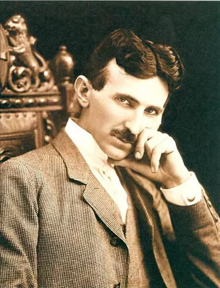

他是爱迪生一生的死敌，一个被严重低估的天才！
2015-08-21
提到特斯拉，你会想到什么，大多数人会直接关联到享誉全球的特斯拉汽车。殊不知，这款电动车先驱正是伊隆•马斯克为了纪念自己的精神偶像——尼古拉•特斯拉（Nikola Tesla）而命名，物理学上的磁场单位特斯拉指的也是他。手机、电视、电脑、GPS…这些日常应用都在一定程度上依托于特斯拉的发明，可以说，我们每个人，都活在他的预言里。

科学界有一个普遍共识，人类历史上 曾经存在过两个公认的旷世天才：达•芬奇和尼古拉•特斯拉。尼古拉•特斯拉是电气化领域的先驱，是他发明和创造了交流电系统，发明了电机和高压变压器，创造出了第一台无线电遥控的机器、机器人工程学原理和太阳能驱动的发动机、X光设备、电能仪表、汽车速度仪表、冷光灯、电子钟、电子治疗仪……他在科学和工程学领域取得了大约一千项发明。